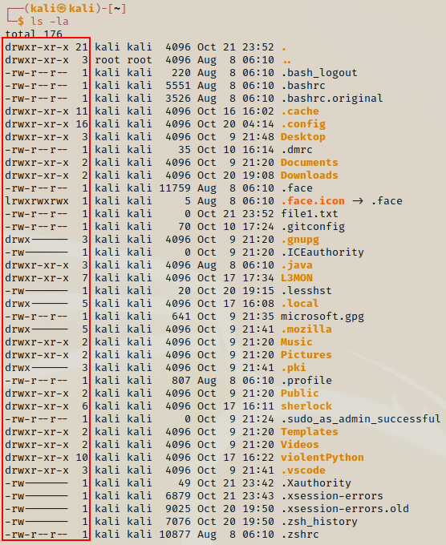

Users & Priviledges
When we enter commands like ls -la from the terminal we can recieve extra data on our files and directories. We will break down how to read some of this data, look at how to create new users and the different privilledges between them.
ls -a

This tells us what type of data the files are and what permissions come with them.
Lets look at what the chacaters mean - this will help us determine how we will approach files and directories in the furture.

d means its a directory. In our example d is the Desktop directory

- means its a file. In our example - is the .dmrc file

r means read

w means write

x means execute
The next 9x characters are split into 3x category groups (3x characters each). Each category is assigned a different set of permissions for that singular file/directory. Please note that not all files will have the same permissions!
- 1st Group Permissions
- Belongs to the owner of the file.

- The user can read, write and execute as a user in the Desktop folder.
- 2nd Group Permissions
- Is the group ownership of the file. So if there are any other users with access, they will have whatever permissions available to them.

- Any other user with grouped access to this Desktop folder can read and execute (but cannot create files)
- 3rd Group Permissions
- Refer to all the other users (common users)

- Common users can have access to the Desktop to view & execute files (but cannot create any)
These categories come into play when we are pen testing because you will be looking for files to expose to run your expolits. With full access it is easier for you to run your scripts / exploits. Sometimes we may to access a file with full access and then modify it in order to run our exploits.
Create a new file then change the mode
When we create a file, we will want to run it but it won't be executable. This wouldn't be possible unless we had some access so to do this we would have to change the mode of the file. We do this by entering chmod followed by the file you wish you change.

We can see newfile.txt doesnt have full access in all 3x groups
chmod -x newfile.txt

The permissions in the groups have now changed along with the font colour of the file.
We can use more commands with the chmod keyword. We have additional options: r (read), w (write) & x (execute) that we can use such as -rx or other combinations.
As you can see from the image above, not all permissions have been granted to this file (even after doing -rwx). So you need to be careful and double check when applying this method.
Another method is to use chmod 777. This automatically sets the file to full access.
chmod 777 newfile.txt

Now the file has full access
Changing the mode is one of the important aspects of pen testing because we will be doing this a lot to run our scripts!
I prefer using the chmod 777 method because its easier and it will give you the full access automatically.
Adding New Users
sudo adduser john

This creates a new user
You will be prompted for your current user's password, then to create your new user's password. Once that's done you have created a new user! We can check if the new user has been created properly by doing a cat on /etc/passwd file.
cat /etc/passwd


The new user is located at the bottom of the file
The passwd file used to house all the user passwords in the older distros of Linux, but now the passwords are located in the /etc/shadow file. Although the passoword file no longer contain the passwords, it still holds information about the users which you maybe able to find an exploit from.
The /etc/shadow file contains the user passwords in a hashed format. With apps such as Hashcat we can crack into the user passwords (if the passwords are weak or my abilities are stronger than the security measures).
The /etc/passwrd file will become your friend because that will be used a lot throughout your pen testing experience. If you have access to a /etc/shadow file then you have a strong possibility of being able to break the encrypted password.
Switching Users
To switch to the new user you enter su then followed by the new user name. su is short for switch user.
su john

Now you have switched to john as a user after enetring password
If you are not a root user, you will have to get permissions to be able to do certain things. We have to remember when we create a new user it doesn't come with the same root permissions. If we're using the john as a user, and we want to change the root's password, we would be denied access even if we use sudo because the user john user is not listed in the Sudoers file.
If the user is not in the Sudoers file they will not gain full access even if they use the sudo command. However, if the user is in the file then they will have full access.
REMEMBER!!
- A new user has base permissions (no full access) until listed in the Sudoers file